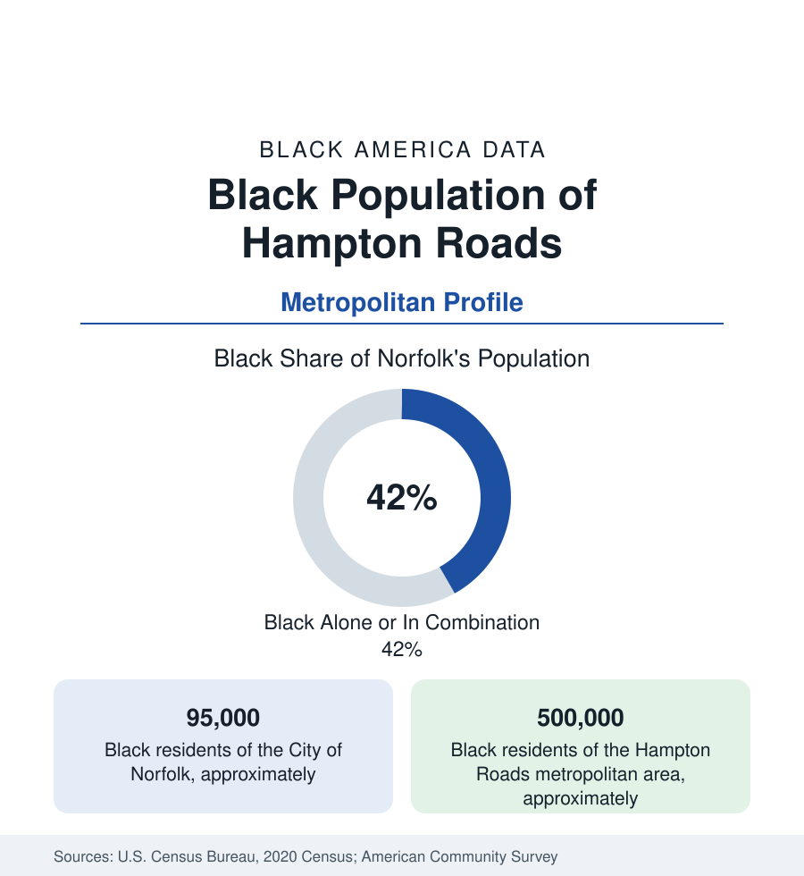

Black Cities
Black Hampton Roads: Norfolk, the Navy, and Four Historic Cities
Hampton Roads holds about 500,000 Black residents across Norfolk, Hampton, Newport News, and Portsmouth — a military-and-HBCU metro like no other. The census profile.

The Hampton Roads metropolitan area holds about 500,000 Black residents — roughly 28 percent of its 1.8 million people — the largest Black population of any American metro without a single dominant core city. The Black community here is distributed across four historic independent cities (Norfolk, Hampton, Newport News, and Portsmouth, two of them majority-Black or near it), anchored by the world's largest naval base and two HBCUs, in the region where English-speaking America and its African population both begin. This article profiles the seven-city metro's Black data.
The Four Cities: Norfolk, Hampton, Newport News, Portsmouth
Norfolk, the metro's historic core, holds about 95,000 Black residents — roughly two-fifths of the city — centered in the districts south and east of downtown (Berkley, Campostella, Norview, Huntersville, and the St. Paul's district whose public-housing redevelopment is the city's defining equity project), with Norfolk State University anchoring the community's east side. Hampton, across the harbor's mouth, holds a Black population of about 65,000 — near half the city — around Hampton University, one of the premier HBCUs, in the city that is also the oldest continuous English-speaking settlement in America and the site of the 1619 Africans' landing at Point Comfort and the 1861 'contraband' decision that made Fort Monroe 'Freedom's Fortress.' Newport News, the shipyard city up the Peninsula, holds about 75,000 Black residents in its Southeast Community and downtown districts, and Portsmouth — majority-Black in recent counts, about 55,000 Black residents — completes the set: four cities, four distinct Black civic worlds (each with its own school system, church geography, and political leadership), one integrated labor market. Chesapeake and Virginia Beach, the suburban giants, hold the growth: Virginia Beach, the metro's largest city, counts some 75,000 Black residents and a rising share; Suffolk adds the rural-edge layer.
The Navy's Metro
Hampton Roads is the American military's homeport, and its Black employment data carry the military profile at metropolitan scale: Naval Station Norfolk (the world's largest naval installation), the Norfolk Naval Shipyard in Portsmouth, Langley Air Force Base in Hampton, and the defense contractors around them employ the region's Black workforce in depth — active-duty families in the suburban subdivisions, civil-service professionals at the yards, and Newport News Shipbuilding (the carrier and submarine yard, one of Virginia's largest employers) on the Peninsula. The stability shows in the indicators: Black Hampton Roads posts homeownership and median income at the stronger end of the Southern metro set on the military-civil-service base, and the region's Black suburban landscape (Chesapeake's districts, Virginia Beach's subdivisions, Hampton's north side) is substantially a service-members' and yard-workers' geography. The veterans' share of the Black population is among the highest of any metro in this section.
Institutions: Two HBCUs and the 1619 Ground
The institutional layer is unmatched at the metro's size: Hampton University (founded 1868, with its museum — among the oldest African American museums in the nation — and its waterfront campus), Norfolk State (the comprehensive urban HBCU), the region's dense Black church geography, and a historical patrimony that the heritage data now monetize: the 1619 landing site at Fort Monroe (a national monument), Hampton's Emancipation Oak (where the first Southern reading of the Emancipation Proclamation is commemorated), and the Peninsula's Underground Railroad and contraband-camp record. The heritage-tourism economy built on that ground is a growing line in the region's visitor data, and the 1619 commemorations anchored the national project's geography here for the reasons the census of 1620 itself records.
Change and the Estimates
The estimates show the metro's Black population growing slowly and suburbanizing: Chesapeake and Virginia Beach gain fastest, the Peninsula cities hold, Norfolk's districts negotiate the St. Paul's transformation and the waterfront's appreciation, and sea-level rise and flooding — Hampton Roads is among the most exposed metros in America — distribute a new environmental file across the historic low-lying districts in the resilience plans' maps. The composition adds growing African and Caribbean communities around the bases and universities to the deepest-rooted native-born base in this section.
Reading the Hampton Roads Numbers
Hampton Roads is where Black America begins — the 1619 ground — and its modern data describe a half-million-person community spread across four cities, floated on the Navy, and schooled by two HBCUs. No metro in this reference distributes its Black population so evenly or roots it so deep; the seven cities' tables are one community's, written in the first person plural since 1619.
More in Black Cities
Black Atlanta: Population, Distribution, and Growth of a Black Metropolis
Metro Atlanta holds more than two million Black residents — roughly one in three, second only to New York. The suburban distribution, migration history, and composition of Black Atlanta in the census data.
Black New York: The Largest Black Population in America
The New York metropolitan area holds about 3.4 million Black residents — more than any metro in the nation — and the city itself about two million. The census profile.
Black Washington: The District and the Metro
The Washington metro holds about 1.6 million Black residents, and the District itself — long a majority-Black city — now records a Black share near 41 percent. The census profile.
Source: U.S. Census Bureau, 2020 Census; American Community Survey; Population Estimates Program.